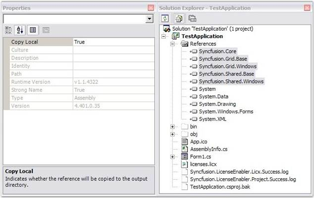

In order to deploy an application that uses the Syncfusion assemblies, the referenced Syncfusion assemblies should reside in the application folder in the target machine, where the exe exists.
To achieve this, on the Solution Explorer, in the References tab, select all the Syncfusion assemblies and then set the Copy Local property of the Syncfusion assemblies to true. And then compile the project. Verify that the licenses.licx file listed in the project has its Build Action property to Embedded Resource.
Now you may see that the Syncfusion assemblies referenced in the project are copied to the output directory along with the application executable (bin/debug/). Deploy the exe along with the Syncfusion assemblies, found in this location, to the target machine. Make sure that these Syncfusion assemblies reside in the same location as the application exe in the target machine.
 Note: In Windows Forms applications, placing these
referenced Syncfusion assemblies in the GAC alone in the target machine, will
also work.
Note: In Windows Forms applications, placing these
referenced Syncfusion assemblies in the GAC alone in the target machine, will
also work.
The following screenshot clearly shows this setting.

Figure 55: Solution Explorer – Test Application
Note: If you are using System.Web reference in
your project, it requires a licensecontext.slf file included in your project
folder and that should be placed in your application directory. This will
validate runtime licensing of Syncfusion components used in the application when
deployed over web. This file changes for each version. So, please ensure that
the old file is replaced in the new version upgrades.